Adventure Time
Á venda
Dragon Ball Z
Goku
Shun de Andrômeda
Shiryu de Dragão
Itachi Uchiha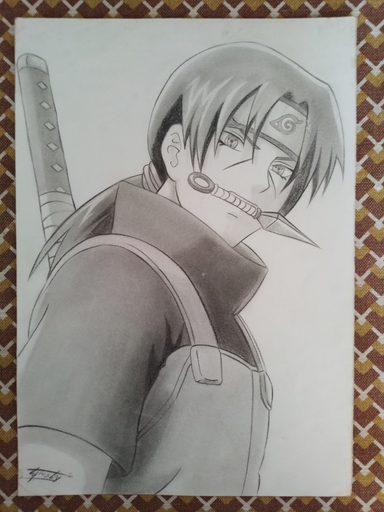
AC/DC Poster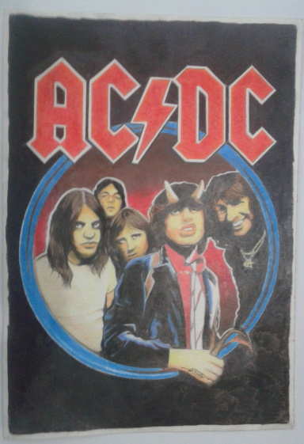
Jeff The Killer
Jeff Rasgado
Bruno Mars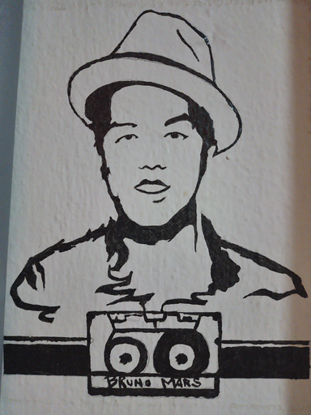
Avenged Sevenfold
Fé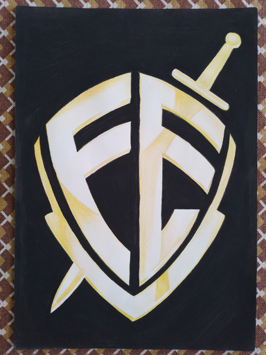
Batman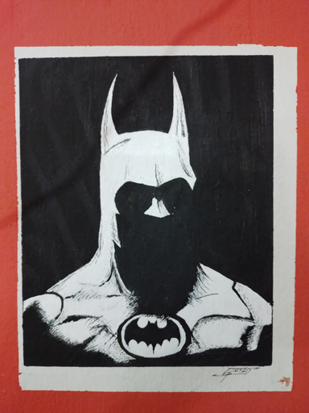
Slipknot
Hellen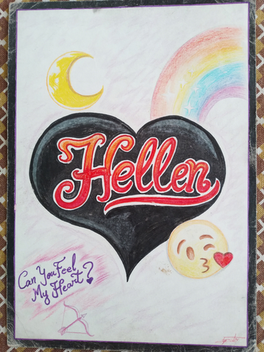
Dragão Chines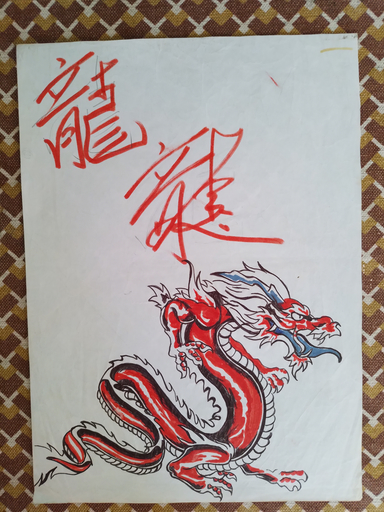
Jasmine
Rick Sanchez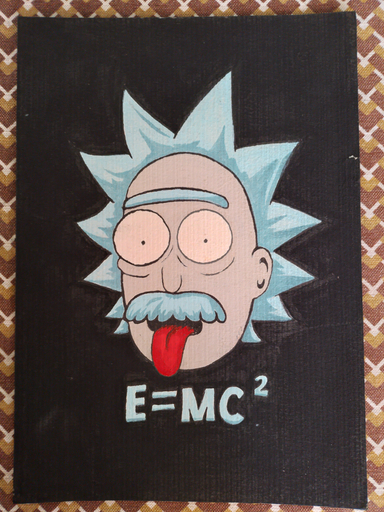
Goku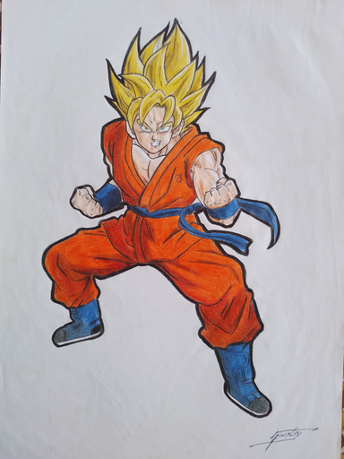
Miranha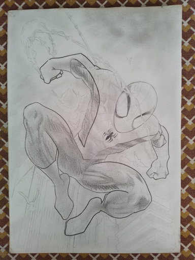
Billy Joe - Green Day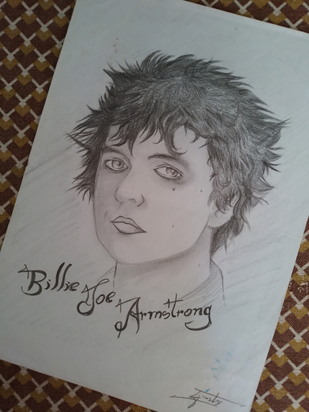
Asuka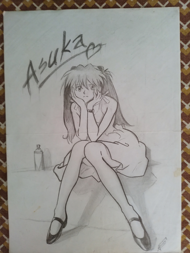
Juliana Xavier
Gisele Bündchen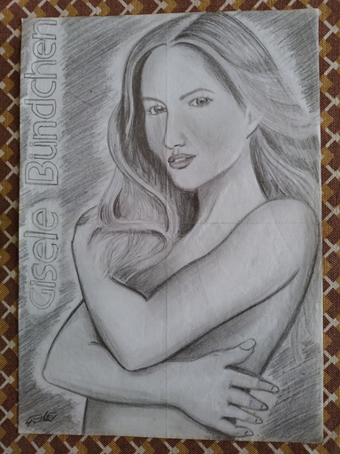
Desenho Realista - Claudete 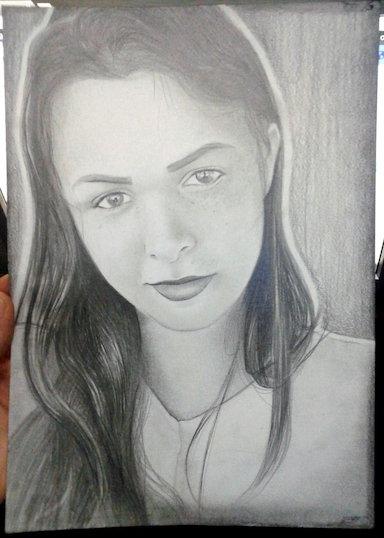
Desenho Realista
Mascote Empresa GNV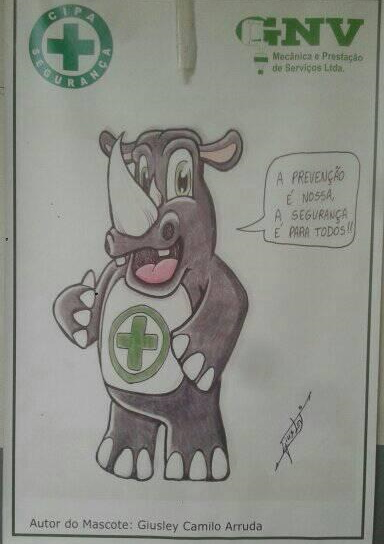
Gato de botas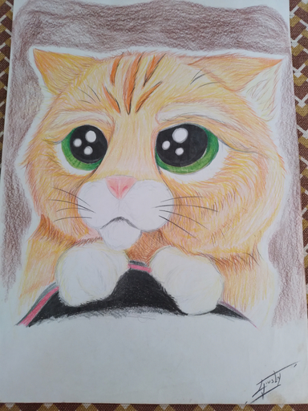
Sons Of Anarchy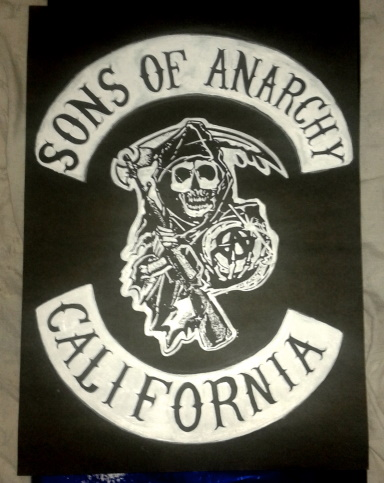
Rancho Barra Alegre
Retrato Realista Alice
BS Logo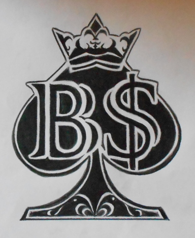
Motoclube João Catraca Club Ipatinga MG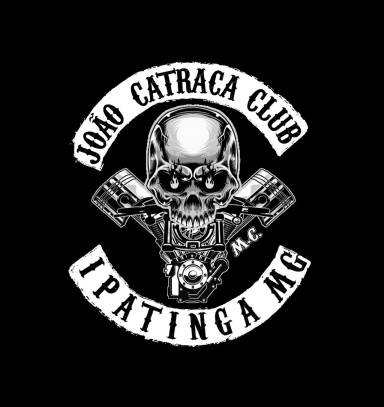
Trombeta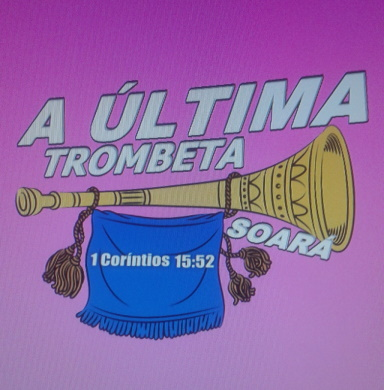
Logo Restaurante
Divulgação Promoção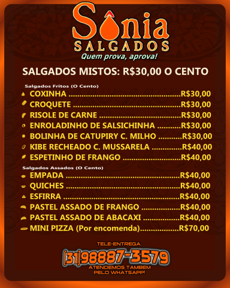
Divulgação Promoção
Divulgação Loja
Encarte CD Propósito da Cruz
Divulgação Show
REVOTAB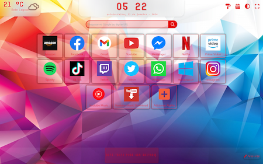
Home Page Ashe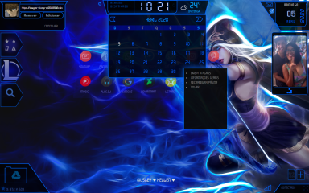
Divulgação Evento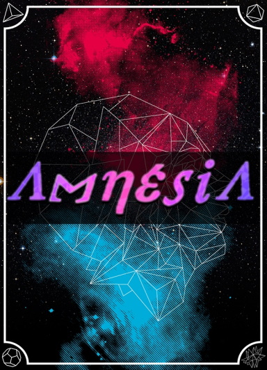
Divulgação Logomarca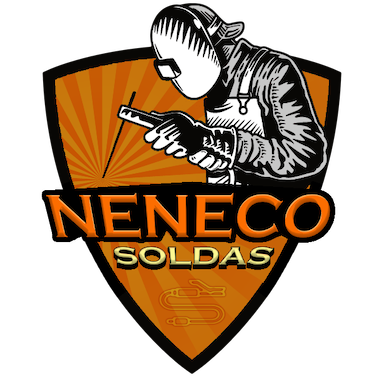
Divulgação Promoção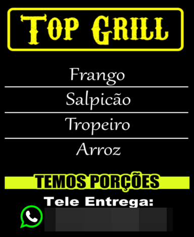
Estampa Camisa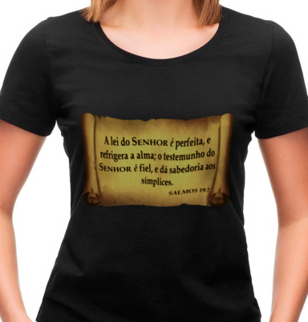
Cave Story - Fan Art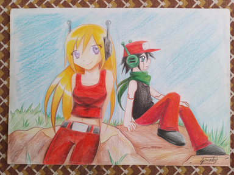
Sonic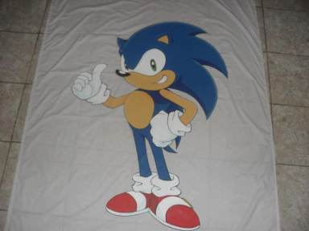
Anatomia Estudo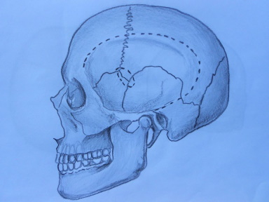


 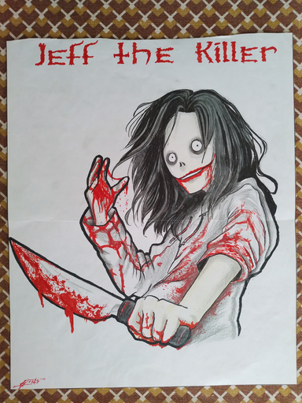
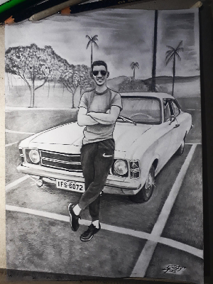
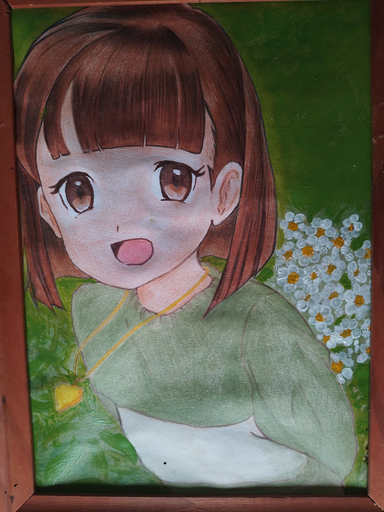
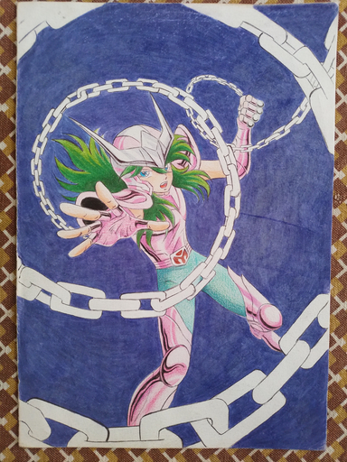
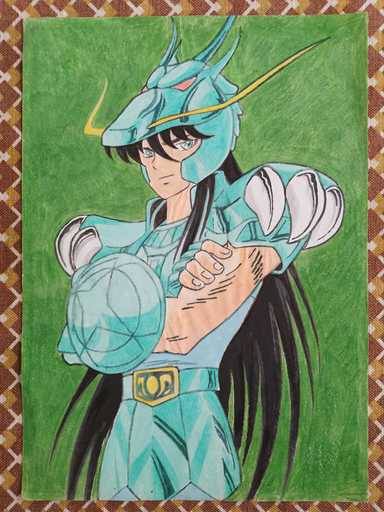
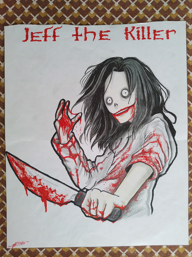
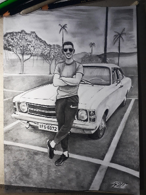
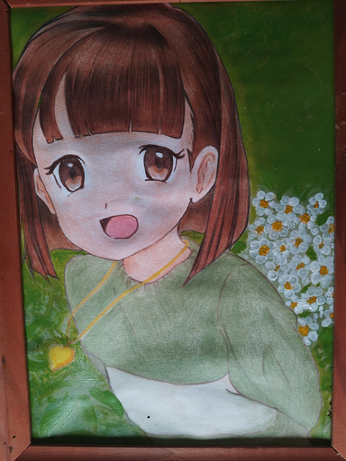
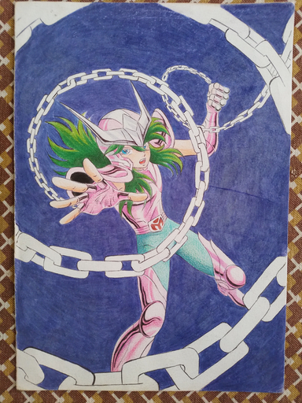
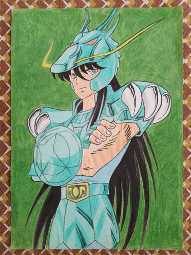
 Sonic Adventure 2
Sonic Adventure 2 Guitar Hero 80's
Guitar Hero 80's  Need For Speed Underground
Need For Speed Underground Chrono Trigger
Chrono Trigger Undertale
Undertale YuGiOh
YuGiOh Pink Floyd
Pink Floyd Iron Maiden
Iron Maiden Aerosmith
Aerosmith Queen
Queen Kiss
Kiss Twenty One Pilots
Twenty One Pilots Poison
Poison Van Hallen
Van Hallen Sou disciplinado, sempre educado, converso pouco, somente o necessário,
a maioria das pessoas me respeitam por isso. Acredito que para as pessoas é
fácil lidar comigo porque não tenho dificuldade em me relacionar.
Considero-me uma pessoa inteligente, tenho facilidade em aprender
e desenvolver uma tarefa por mais complexa que seja.
Procuro me manter focado no serviço, sou determinado pois procuro ser
o melhor no que eu faço.
Sou disciplinado, sempre educado, converso pouco, somente o necessário,
a maioria das pessoas me respeitam por isso. Acredito que para as pessoas é
fácil lidar comigo porque não tenho dificuldade em me relacionar.
Considero-me uma pessoa inteligente, tenho facilidade em aprender
e desenvolver uma tarefa por mais complexa que seja.
Procuro me manter focado no serviço, sou determinado pois procuro ser
o melhor no que eu faço.